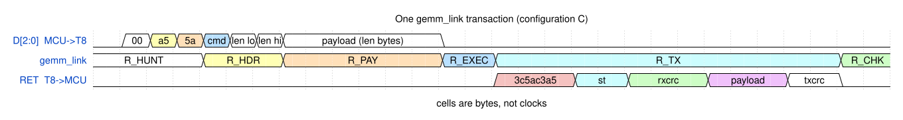

fpga-open-vocab:
vision on a $50 FPGA board
Change the query and enroll scenes — no image-model retraining.
Local image inference.
No cloud calls or per-frame fees.
MCU + FPGA board.
Low hardware cost for a prototype.
FPGA image encoder: 265 ms
vs. 1,583 ms on the MCU CPU.
Distillation · quantization · firmware · FPGA digital circuit design (RTL)
Human direction and hardware validation.
Board price excludes camera and host. Speedup: 5.97×, same model and 320 MHz MCU clock.
- 00About the speaker2 min
- 01Project overview4 min
- 02Model and hardware12 min
- 03System architecture11 min
- 04Inference optimization7 min
- 05From embeddings to decisions7 min
- 06Implementation lessons5 min
- 07Summary and Q&A2 min

- Talks, demos and sample code about AI development
- fpga-open-vocab is a personal project for image recognition on an MCU and FPGA, without cloud inference
- FPGA audio synthesizer project:
github.com/kazunori279/xls32-fpga-synth

Forgix board for image inference.
The manufacturer’s photo includes a coin for scale.

The demo’s camera input (B0400).
Sends images to the RP2354A over SPI.
A camera-based scene classifier. Enter phrases such as “an opened book” and “a closed book”, then register examples in the target environment.
- 1.40 M parameters, mostly int4, using 768 KB. Each frame requires 159 million multiply-accumulate operations (MACs)
- ~$50 Forgix board with an RP2354A microcontroller (MCU) and Efinix Trion T8 FPGA
- All eight convolution layers use the FPGA accelerator
- 265 ms for the encoder. Camera frame: 282 ms from component timings, 293 ms measured end to end
- 5.97× faster than the MCU alone at the same 320 MHz. All 512 output floats match the C reference bit for bit
The board runs image inference locally and displays the result on an RGB LED. The host handles text encoding and setup.
# compare four text queries uv run host/demo.py "cup" "person" "book" "laptop" # register examples of two scenes uv run --script host/spot.py \ "an opened book" "a closed book"
LED: the meaning of colour and brightness depends on the mode. Registered scenes use reference-based decisions. Later slides explain the unregistered mode.
Console: each frame reports cosine similarity, the room-normalized score (z-score), the selected query and processing time.
Changing queries: send new text vectors without reflashing the model. Start with an empty scene because the background calibration resets.
Evaluation: use a scripted test with known scene labels to measure accuracy. A changing LED alone does not establish accuracy.
Image encoding runs on the board.Both encoders produce vectors in the same embedding space. A text vector is needed only when a query changes, while an image vector is needed for every frame. This separates the large text model from the device’s continuous inference workload.
CLIP (OpenAI, 2021) introduced this approach. The current teacher is SigLIP 2 SO400M, which uses a sigmoid-based training loss.
The student learns the teacher’s 512-dimensional projected output for the same image. This lets its output be compared with the teacher’s text vectors.
1.40 M parameters, 159 MMAC, eight 3×3 convolution stages. Design limits: 1.5 M parameters and 250 MMAC.
The original student retained 94% of queries that its teacher answered correctly. The current teacher and int4 model retain 91%.
These are retention results on the evaluation task. They are not the device’s accuracy in a new room.
The teacher changed from CLIP ViT-B/16 to SigLIP 2 SO400M. A fixed principal component analysis (PCA) projection reduces 1152 dimensions to 512.
Two incompatible spaces can have the same dimension and still produce a numeric score. export.json identifies the space, and a weight CRC32 check detects the wrong model on the board.
Logic elements (LEs) contain lookup tables and registers. Dedicated multipliers and block RAM provide arithmetic and storage resources.
A bitstream configures the circuit. In this accelerator, control logic schedules parallel operations instead of executing a CPU instruction stream.
Convolution contains many multiply-accumulate operations. This tile performs 16 MACs per clock when operands are available.
Integer arithmetic makes exact comparison with the C reference possible. Tests check both intermediate sums and final embeddings.
7,384 LEs, eight 18×18 multipliers, and 24 blocks of 5 kbit RAM. Total FPGA memory is 15.4 KB.
The current design uses 6,265 LEs (85%), all eight multipliers, and 21 memory blocks (88%). Both logic and memory limit further expansion.
| Specification | Design impact | |
|---|---|---|
| MCU | RP2354A — 2 × Cortex-M33, 520 KB SRAM, 2 MB stacked flash | The model weights and FPGA bitstream fit in MCU flash. No external model storage is required. |
| FPGA | Efinix Trion T8F49 — 7,384 LE, 8 hard multipliers, 15.4 KB BRAM | 85% of LEs, 8/8 multipliers, 21/24 RAM blocks are in use. |
| The link | 3 bits out, 1 bit back. 26.4 MB/s forward, 8.9 MB/s back — measured | Available pins limit the bus width. More data travels toward the accelerator than returns from it. |
| Clocks | 320 MHz system / 160 MHz link, with bit-exact results. 332 MHz saves 10 ms, but the deployed design stops responding at 340 MHz. | link_clk = sys_clk / 2. The MCU supplies the FPGA clock, so increasing the link rate also speeds up computation. |
| Camera | ArduCam Mega 3MP over SPI, six wires to the header | Native 128 × 128 capture reduced mean AUC by only 0.001 in the framing comparison. |
| Output | One RGB LED, plus a serial log | The LED displays the result. USB serial provides scores and diagnostic logs. |
| Price | ~$50, one board, off the shelf | The board performs image inference without a GPU or network service. |
Runs the text encoder when a query changes and sends its 512-dimensional vector over USB. Loads the FPGA bitstream at startup.
Training, quantization and model export also run off-device.
Controls transfers using PIO (programmable I/O) and DMA (direct memory access). Prepares commands and checks returned data.
PIO supplies the FPGA clock during transactions, including the cycles needed for computation.
Prepares the next block’s weights and input data, then writes results to the activation buffer. Two lock-free ring buffers coordinate the cores.
In the current 270 ms benchmark, core 1 is busy for 149 ms. Most of that overlaps link activity, leaving 5 ms of waiting on core 0.
Stores 2,048 running sums in int32; 16 MACs per clock. Eight multipliers are dedicated hardware and eight use logic elements.
The tile also unpacks int4 weights and requantizes outputs. The MCU supplies each block’s operands.
A wide accumulator adds products across all 3 × 3 taps and input channels.
in_scale, round and clip to ±127. Only conv0 uses signed input activations.A complete convolution layer exceeds the FPGA’s memory. The MCU divides it into blocks that fit, then sends them in sequence.
- Each block uses up to 2,048 int32 accumulators and a 2 KB input slice
- Per frame: 174 blocks, 1,856 passes through channel/kernel groups, 6,264 transactions
ACT: send inputs.WGT: send weights.RUN: compute.DRAIN: read results.
All model weights reside in MCU flash. The MCU transfers only the weights needed for each block to the FPGA.
The tile can requantize outputs to one byte before DRAIN. In the M15 test, this reduced return-transfer time from 153 ms to 41 ms.
- Pin-map check: six header pins reach the MCU, 13 GPIOs are unbonded, and the widest usable consecutive group is three bits
- Return path: only GPIO6 is available. GPIO5 is
CDONE, and GPIO7 has no package pad - Clock jumper: moving the clock to a clock-capable FPGA pin frees the third data line
- Measured throughput: 26.4 MB/s toward the FPGA and 8.9 MB/s back
The accelerator receives weights and input activations, then returns a smaller result. This workload suits the asymmetric link.
The MCU supplies clock cycles for computation as well as transfer. Raising the link clock therefore speeds up both.
| Signal | Bits | Rate |
|---|---|---|
| MCU → FPGA | 3 | 26.4 MB/s |
| FPGA → MCU | 1 | 8.9 MB/s |
| Clock | 1 | PIO side-set — the MCU is the tile's only clock |

The frame begins with a5 5a, followed by a command and a 16-bit length. The receiver searches for this preamble to recover synchronization.
The receiver handles the header, payload, execution, response and checksum in seven states. RUN has no payload and waits for computation to finish.
CRC checks the payload in both directions. A status byte reports command results. Tests also compare the complete 512-float output with the C reference.
| Milestone | What changed | Frame | vs MCU |
|---|---|---|---|
| baseline | Optimized student model on the MCU alone | 3,359 ms | 1.00× |
| M7c | All eight convolution layers on the FPGA, in 174 blocks | 2,164 ms | 1.62× |
| M7d | DMA data transfer and hardware CRC calculation | 1,481 ms | 2.35× |
| M7e | Core 1 prepares weights and writes output activations | 1,292 ms | 2.71× |
| M7f/g | Two work queues, critical code in SRAM, three-bit link | 975 ms | 3.54× |
| M7h/i | Cached weight preparation and faster rounding/clamping | 851 ms | 3.94× |
| M14 | int4 weight transfer: two weights per byte | 798 ms | 4.32× |
| M15 | FPGA requantization: one output byte instead of four | 631 ms | 5.46× |
| M16 | Parallel kernel taps: six sweeps instead of nine | 569 ms | 6.05× |
| the clock | Clock increase to 320 MHz system / 160 MHz link | 270 ms | 12.76× |
Each byte contains two signed four-bit weights. The tile reads the low nibble first and sign-extends each weight to eight bits before storing it in wbuf.
Weight-buffer width and multiplier inputs remain unchanged. Packing reduces transfer size without changing the stored numeric values.
The existing multiplier computes the same products. The same golden values verify both packed and unpacked weight transfer.
cfg_w4 selects weight width for each block at runtime. The exported model specifies each layer’s width, so one bitstream handles both formats.
Weight traffic falls from 2,230,272 to 1,142,784 bytes per frame. Weight-transfer cycles fall from 6.66 to 3.76 million.
Other commands are unchanged. Saving 1,087,488 bytes removes 2.90 million link clocks, consistent with eight bits per byte over three data lines.
- M7d: 563 ms of CPU work remained outside the DMA transfer interval
- M7e: moving work to core 1 saved 193 ms, versus 380 ms predicted. Some work already overlapped DMA
- M7f: removing 157 ms from core 0 saved 59 ms overall because FIFO waiting increased
- Three-bit link: 286 ms less transfer time initially saved no frame time. Removing other bottlenecks later recovered 165 ms
- M10: the expected ~450 ms bottleneck measured only 32 ms, so the proposed optimization was dropped
- M7i: an 84 ms reduction in a queue that blocked core 0 produced 79% of that reduction in frame time
- M16: the same 16.30 million FPGA-clock reduction produced 100% or 66% of the expected frame saving, depending on link configuration
- Waiting determines the critical path. In one profile, core 1 spent 82 ms preparing weights, but core 0 waited about 20 ms. Eliminating all 82 ms would not save 82 ms per frame.
does not establish the maximumEarly tests started at 150 MHz system / 75 MHz link and only lowered the clock after failure. That procedure never tested higher rates. Testing upward later reached 280 MHz system / 140 MHz link with bit-exact results in three boots. Measure both passing and failing rates before treating a clock setting as a limit.
Failures occurred at link frequencies of 39–41 MHz and 122–130 MHz. Tests reproduced both bands across three boots.
The band centers are about 86 MHz apart. A round-trip timing model estimates a delay of 11.7 ns from that spacing.
Fitting each band separately gives a setup/hold window of 0.73 ns and 0.83 ns. These are estimates from the model, not direct oscilloscope measurements.
Increasing core voltage shifts the band upward by about 1 MHz per 0.05 V. This is consistent with a reduced propagation delay.
The m6 diagnostic passed at 344 MHz system / 172 MHz link with 1.30 V core voltage. At 348 MHz the MCU hung.
These limits do not transfer to the full application. It uses 320 MHz at 1.25 V, and its link stops responding at 340 MHz.
Raw cosine similarity is not a calibrated detection score. Tests found query bias, background bias and temporal drift.
- Query bias: a cosine of 0.27 can be high for one phrase and low for another
- Background bias:
laptopranked first in all five test scenes, even though none contained a laptop - Drift: across 500 static frames, four queries fell together by about 1.5 z-score units over four minutes
Room calibration: measure each query on an empty scene, then express its score relative to that background. This reduces background bias but does not eliminate every source of drift.
// the score is not the cosine z[i] = (cos[i] − qbg[i]) / bg_spread(i);
qbg is the mean background cosine. bg_spread is its standard deviation with a lower bound. Estimate both over the first 30 empty-scene frames, then freeze them.| Background | Effect |
|---|---|
| Frozen (default) | Persistent objects remain different from the initial background. |
| Continuously updated | A stationary object gradually becomes part of the background. |
level = mean(z) // shared score component c[i] = z[i] − level // centered query scores
State: subtract the mean across queries. This removes score changes shared equally by all queries. Compare the resulting vector c[] with registered class references.
On two recorded runs, the revised state rule improved accuracy from 44.2% to 84.2% and 87.5% to 95.8%.
Presence: using level failed because it retained the common drift. The current rule instead compares distance to the closest class with distance to an empty-scene reference.
Register a class: show the scene and press its key, 1 to 6. The board averages 20 frames of c[].
Restage the object and repeat. A second visit samples placement variation. Both visits contribute to the class reference. Register the empty scene with 0.
| Frames averaged | 1 | 5 | 12 | 16 | 20 |
|---|---|---|---|---|---|
| Test accuracy (%) | 90.0 | 89.2 | 96.7 | 99.2 | 100.0 % |
Detect presence: find the closest object reference. Call the object present if it is closer than the empty-scene reference. The empty reference is used for this check, not as an object label.
// d = to the nearest class, de = to the empty reference
present = (de > d);
| Presence rule | Mean balanced accuracy |
|---|---|
| Nearest reference (current) | 79.4 % |
| Radius fitted to test answers | 73.7 % |
| Distance band (fallback) | 53.8 % |
| Rule | Mean, all 40 runs | Mean, 33 book runs | Minimum, book runs |
|---|---|---|---|
| Registered references | 68.9% | 69.2% | 0.8% |
| Highest z-score, no registration | 62.7% | 64.1% | 26.0% |
| Best cut using known answers | 83.3% | 85.8% | 52.0% |
Registration improves the mean, but not every test. It adds 5.1 percentage points on the 33 book tests. References that are too close or incorrectly ordered can reduce accuracy.
Empty frames are excluded. The best-cut row uses the correct answers to choose a boundary separately for each test, so it is a diagnostic comparison rather than a deployable method.
uv run --script host/spot.py \
"an opened book" "a closed book"
>>> Show it: an opened book. Visit 1 of 2 press Enter when the scene is right key : pressed '1' enrol : an opened book, level +1.07, scatter 0.14 (20 frames, visit 1 of 2) ... frame 148 an opened book by 1.90 frame 149 the empty scene frame 150 something else
Operation: about 3.5 frames per second, after roughly a minute of registration. Query changes require fresh background calibration.
Limits of the current device:
- Environment-specific: it distinguishes scenes registered in that room and lighting
- One result per image: no bounding boxes or validated object counts
- Pair-dependent accuracy: four successive tests scored 95.8 / 90.8 / 50.0 / 34.2%
- Wording matters: “an empty glass” won on only 6.7% of frames labeled as that state in one evaluation
- Registration statistics do not certify accuracy: eight prospective tests did not support the proposed quality thresholds
| Pair | Observation |
|---|---|
| Open / closed hand, red / green cube | LED colour changed with the presented state |
| Open / closed box | Difference-of-text-vectors query selected “closed” for an open box |
| One / two cups | Scores differed, but were much stronger for one state |
--state marks phrases as competing states. A separate gate query, such as “a hand”, controls presence. In this mode, LED colour represents state and brightness represents the gate score.
Without registration or these roles, LED brightness stays fixed and colour indicates match strength. It does not encode which class won.
| State pair | Original images /6 | Worst image change /6 | With empty reference /6 |
|---|---|---|---|
| Towel: folded / crumpled | 6 | 5 | 3 |
| Mug: upright / tipped | 6 | 5 | 6 |
| Banana: unpeeled / peeled | 5 | 3 | 4 |
| Eyeglasses: unfolded / folded | 4 | 4 | 3 |
| Tray: keys / wallet | 3 | 3 | 3 |
| Basil: upright / drooping | 2 | 2 | 2 |
| Control: open hand / fist | 5 | 3 | 4 |
Towels and mugs are candidates for board testing. Each row uses six similar images from one generated scene. The final column counts correct object images, not empty-scene detection.
References are fitted per lighting condition. Device background calibration and temporal processing are omitted.
rtl/mk_peri.py generates that file from the interface description for automated builds.0x… with 0X… and rejected matching weights. All four offline tests covered only mismatches. Tests must include the valid path as well.- Profile both computation and waiting. Compare optimized and baseline runs in the same boot, and keep clock settings explicit.
- A passing rate confirms that setting only. Test higher and lower rates, and distinguish a diagnostic benchmark from the full application.
- Use a fine frequency sweep to find the edges of a failing band. Treat a physical explanation as a hypothesis until further tests support it.
- Equal vector dimensions do not guarantee compatible embeddings. Record the model and projection identity, and verify the weights on the device.
- 01Text encoding runs on the host. Image encoding runs on the MCU and FPGA.
- 02The 1.40 M-parameter student retains 91% of teacher-correct queries on the evaluation task.
- 03The FPGA uses 21 of 24 RAM blocks and 85% of logic elements.
- 04The encoder takes 265 ms. The measured camera-frame interval is 293 ms.
- 05The encoder is 5.97× faster than the MCU alone at the same 320 MHz.
- 06Scene registration improves average accuracy, but results depend strongly on the pair and environment.
- 07Use held-out scenes to evaluate both object-state accuracy and empty-scene rejection.
README.md: project status and getting starteddocs/architecture.md: model, hardware, scheduling and decision rulesdocs/building.md: build tools, flashing and test programsdocs/history.md: design changes and lessons from earlier implementationsdocs/monitor.md: running the device as a scene monitordocs/fit.md: evaluating whether a proposed use case is suitable
docs/milestones.md: development stages M0–M21, including original measurementsdocs/bring-up-log.md: dated hardware tests, findings and later corrections
- CLIP: arxiv.org/abs/2103.00020. Current teacher: SigLIP 2 SO400M
- Forgix: forgix.tech. FPGA: Efinix Trion T8. MCU: Raspberry Pi RP2354A
- FPGA audio synthesizer: github.com/kazunori279/xls32-fpga-synth
Thank you
Questions?